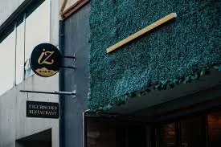
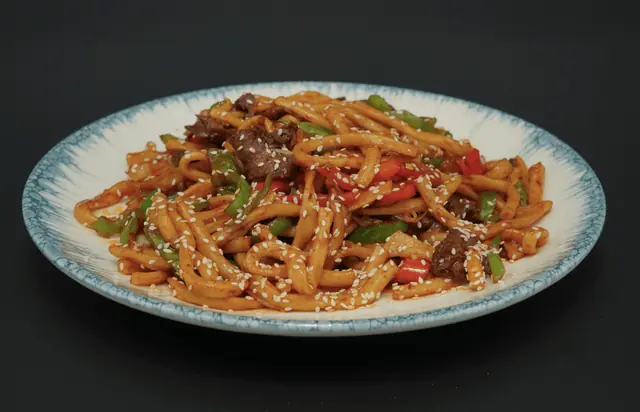
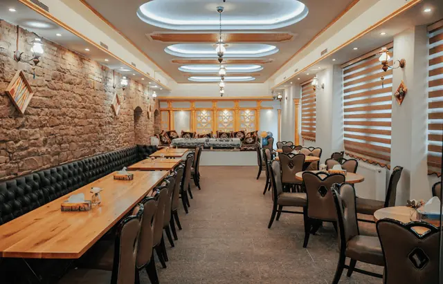
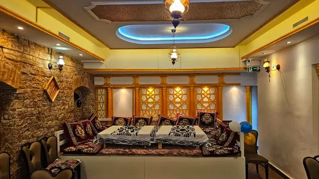

Über uns – IZ Restaurant Mannheim
Willkommen im IZ Uigurischen Restaurant in Mannheim – deinem Ziel für authentische uigurische Küche im Herzen der Stadt. Bei uns erlebst du eine einzigartige kulinarische Reise entlang der historischen Seidenstraße, wo Tradition, Geschmack und Gastfreundschaft aufeinandertreffen.
Ob du zum ersten Mal uigurisch essen gehst oder neue Aromen entdecken möchtest – wir laden dich ein, die Vielfalt Zentralasiens in einer besonderen Atmosphäre zu erleben.




Unsere Wurzeln – Uigurische Küche & Seidenstraße
Die uigurische Küche stammt aus Zentralasien und entstand entlang der legendären Seidenstraße – einem der wichtigsten Handelswege zwischen Ost und West. Dadurch vereint sie Einflüsse aus der Türkei, Persien und dem Nahen Osten zu einer einzigartigen kulinarischen Tradition.
Diese besondere Mischung macht die uigurische Küche so einzigartig: aromatische Gewürze, frische Zutaten und traditionelle Handarbeit verbinden sich zu intensiven Geschmackserlebnissen.
Unsere Küche – Authentisch, frisch und handgemacht
Im IZ Restaurant Mannheim legen wir großen Wert auf authentische Zubereitung. Viele unserer Gerichte werden frisch und nach traditionellen Rezepten gekocht – so wie sie seit Generationen weitergegeben werden.
Besonders bekannt sind unsere Laghman-Nudeln – handgezogene Nudeln, die frisch zubereitet und mit Fleisch, Gemüse und würzigen Saucen serviert werden. Sie gelten als Herzstück der uigurischen Küche und sind ein echtes Highlight für alle, die etwas Neues probieren möchten.
Neben Laghman bieten wir eine Vielzahl weiterer Spezialitäten wie würzige Fleischgerichte, traditionelle Reisgerichte (Polo), frisch gebackenes Nan-Brot und aromatische Kebabs.
Unsere Philosophie – Essen als Erlebnis
Für uns ist Essen mehr als nur eine Mahlzeit – es ist ein Erlebnis. In der uigurischen Kultur steht Essen für Gemeinschaft, Familie und Gastfreundschaft.
Deshalb schaffen wir einen Ort, an dem du dich wohlfühlst, entspannen kannst und gemeinsam mit Freunden oder Familie genießen kannst. Unsere traditionelle Einrichtung und unser Service spiegeln genau dieses Lebensgefühl wider.
IZ Restaurant Mannheim – Mehr als nur ein Restaurant
Das IZ Restaurant ist eines der wenigen uigurischen Restaurants in Mannheim und der Region und bietet dir eine Küche, die du so nur selten findest. Bei uns entdeckst du neue Geschmäcker, lernst eine faszinierende Kultur kennen und erlebst echte Handwerkskunst in der Küche.
Wir freuen uns darauf, dich bei uns begrüßen zu dürfen und dir die Vielfalt der uigurischen Küche näherzubringen.
Erlebe uigurische Küche in Mannheim
Jetzt Tisch reservierenUigurische Küche Mannheim – Was ist das?
Die uigurische Küche ist eine traditionelle Küche aus Zentralasien, die entlang der historischen Seidenstraße entstanden ist. Durch den Austausch verschiedener Kulturen entwickelte sich eine einzigartige Esskultur, die für ihre intensiven Aromen, frischen Zutaten und handwerkliche Zubereitung bekannt ist.
Typisch für die uigurische Küche sind handgezogene Nudeln (Laghman), würzige Fleischgerichte, gegrillte Spieße (Kebabs) und aromatische Reisgerichte wie Polo. Gewürze wie Kreuzkümmel, Chili und Knoblauch spielen dabei eine zentrale Rolle und sorgen für den charakteristischen Geschmack.
Ein besonderes Merkmal ist die traditionelle Zubereitung: Viele Gerichte werden frisch von Hand hergestellt – insbesondere die beliebten Nudeln, die direkt vor dem Kochen gezogen werden.
In Mannheim ist die uigurische Küche noch ein echter Geheimtipp. Wer authentisches Essen abseits der bekannten Küchen entdecken möchte, findet hier eine spannende Alternative mit einzigartigem Geschmack und kulturellem Hintergrund.
Im IZ Restaurant Mannheim kannst du diese besondere Küche original erleben – von traditionellen Rezepten bis hin zu modernen Interpretationen zentralasiatischer Spezialitäten.